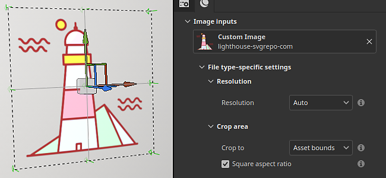
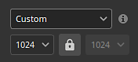

Section
Vector graphic (.svg & .ai)

Vector graphic files (both .svg and Illustrator .ai) can be imported like regular images inside Painter. A few settings are available to adjust the look of the graphic and make it fit better the rest of the texturing.
- For more information about SVG files, see this page.
- For more information about AI files, see this page.
SVG and AI files are automatically converted into pixel images when used inside the Layer Stack (depending on the setting selected). This is a non destructive process, changing the resolution or updating the source file will update the final result accordingly.
Properties
After importing an vectorial file and loading it inside a layer or tool properties, a set of parameters will be available:
|
|
Setting |
Description |
|---|---|---|
|
Artboard |
Artboard |
Select which artboard included in the file is used.
Note
This setting is only available with Illustrator (.ai) files. |
|
Resolution |
Resolution |
Define at which size the svg will be converted into a bitmap image (pixels) when used for the texturing inside the Layer Stack.
Possible values:

|
|
|
||
|
Crop area |
Crop to |
Define how the SVG shapes will be limited to the rendered area.
Possible values:
|
|
Square aspect ratio |
If the crop area is defined by Asset bounds, this setting ensure the original ratio is preserved, avoiding any incorrect stretching when rendering the SVG as a square image.
This setting can make some elements unexpectedly visible. To avoid this issue, disable this setting and instead adjust the UV settings manually when inside a fill layer/effect. |
|
|
Top left Bottom right |
If the crop are is set to Custom area, these settings allow to defined the area manually by specifying the top left and bottom right corners. |
|
|
|
||
|
Scope |
Scope |
Define which elements inside the SVG file are included before rendering it.
It defaults to Document, which mean all the content of the SVG file is used. Use the Change button to adjust which elements to include. |
Scope window
When editing the scope of a vector graphic (see the setting above) a window will appear with a list of elements to select to specify what to include or exclude from the final rendered image.
Use the Show thumbnails checbox to display an image for each element.